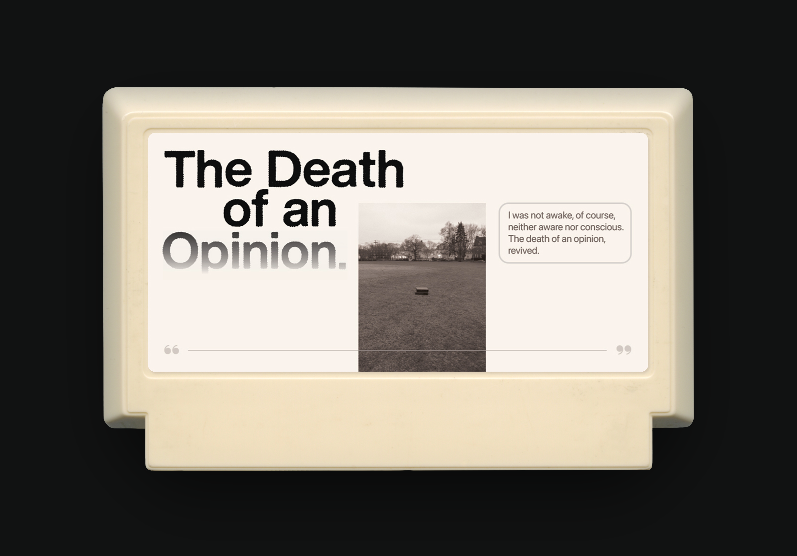
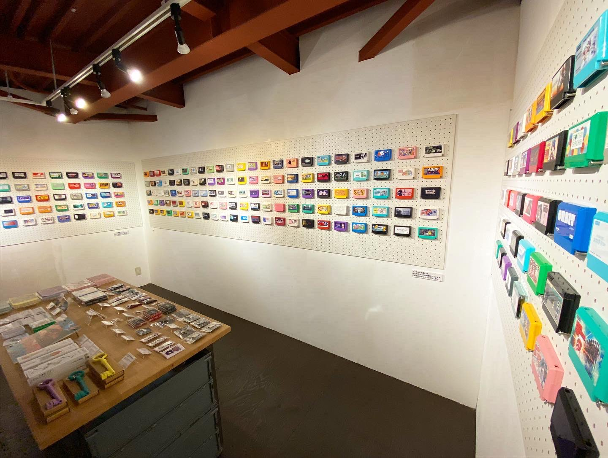

The 2022 Famicase exhibition just went live.
I've always wanted to participate after seeing my favourite graphic designers' works on there. But honestly I'd forgotten all about it until I saw a tweet saying that submissions opened up on March 1st. I heard that slots fill up quickly, so I spent the afternoon rehashing some old concepts/work to put together an entry.
On hindsight, I would have spent the time developing an entirely new idea, but I didn't want to miss out on the submission. It didn't fill up until after a few weeks, so I definitely could have done so. Well, I did have my mid-term exams then, so...
Anyway, here is my entry ⤵︎

By way of a dream I had.
It's nice to be able to share a space with some of the designers I look up to.
In the process of creating the artwork, I envisioned the game to be a visual novel, of course revolving around conversations with friends and strangers, with gauges for emotions like regret, disappointment, tactfulness, among others. It is about voicing your own opinions in the face of scrutiny.
I think it would make for a nice exercise in writing as well.
Do check out the other amazing entries here. My entry is no.127.
